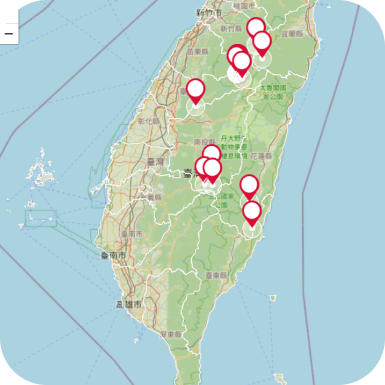

紅點為遊蕩犬出沒地帶， 若頻繁出沒於生態保育區即通發出預警
我要通報
功能介紹
三大功能 全方位守護動物與生態
-

結紮募款
填寫表格即可提出結紮申請，需身分認證。捐款／募款快速、透明又安心，不再怕捐出的金錢無影無蹤。
-

遊蕩犬預警系統
提供民眾通報遊蕩犬聚集資訊若過於接近野生保育區將發出預警給相關單位生態保育so easy。
-
數據故事專題
以大數據分析提供野生動物生態保育專題文章，致力於永續議題倡議，深入了解現狀與探索可能解方